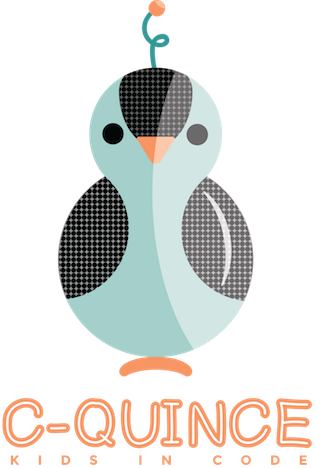

Kids in code
This site is under construction. It will eventually be the home of the accompanying interactive activities for c-quince, a set of printable activities for kindergarteners through second graders to learn programming skills from a young age. The interactive activities will be published as open source software and freely available to everyone, including teachers and homeschool parents.
If you want to learn more about the printable activities, head over to the MallowWorld Blog to learn more.
For now, enjoy a BETA demo of what we're working on to enhance the printable activities you can do with your students.
